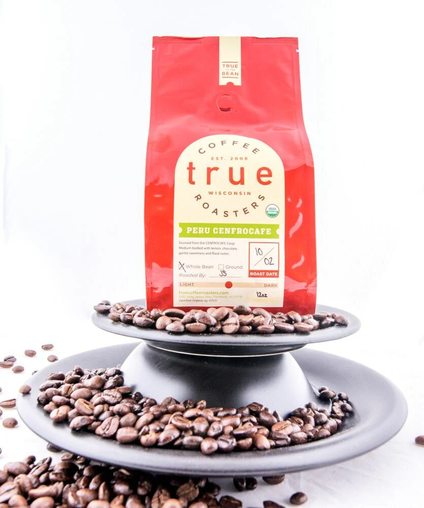
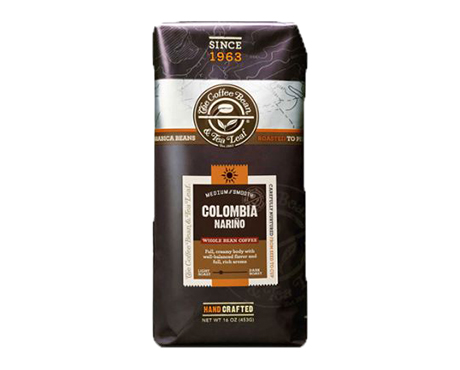
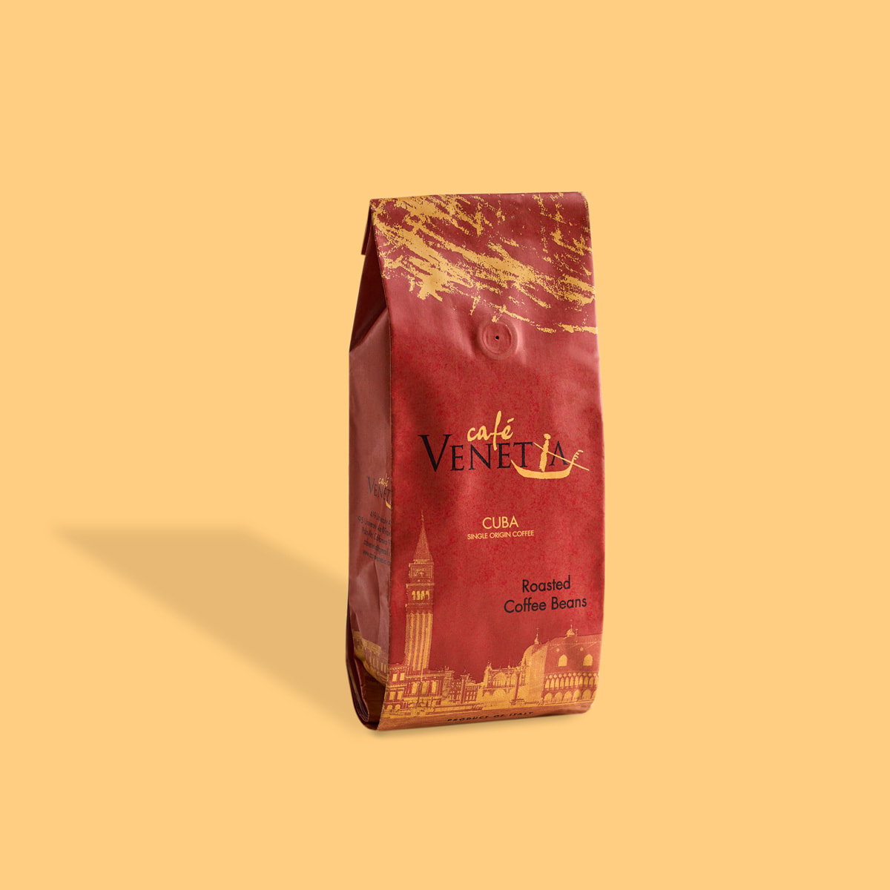
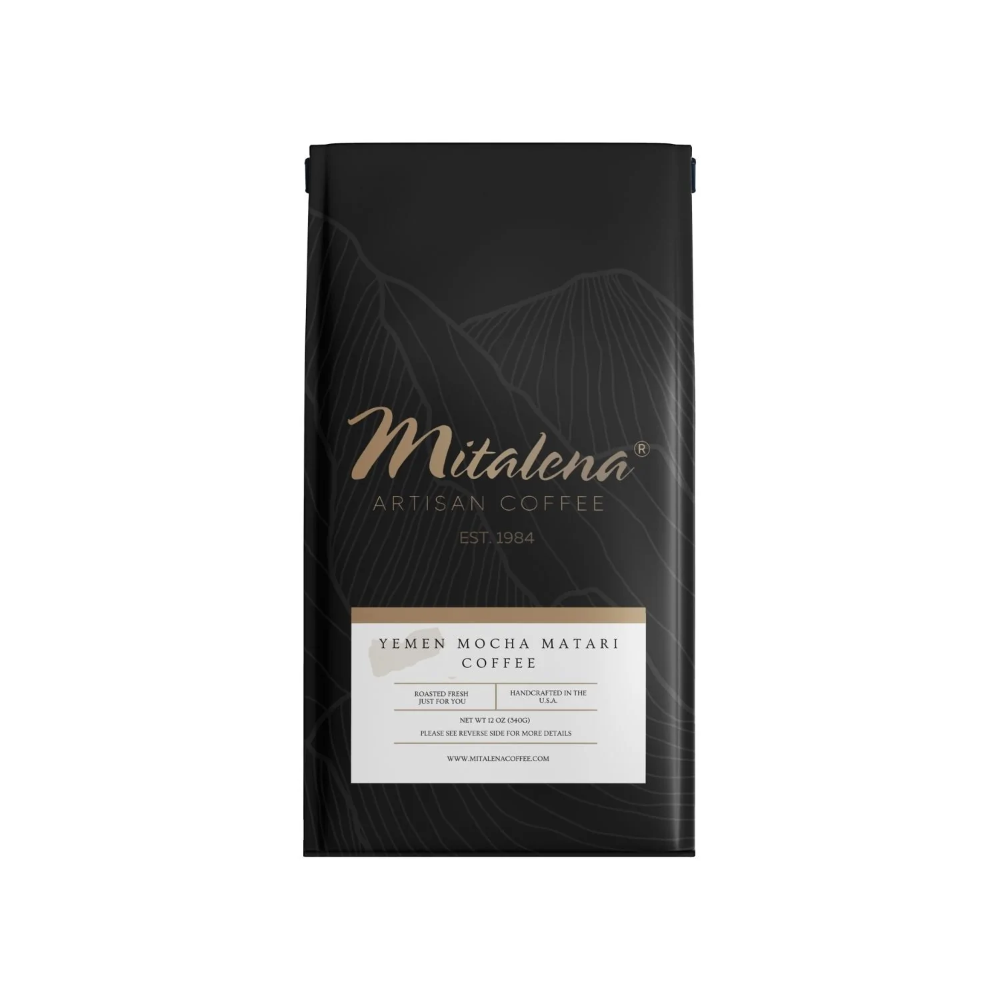
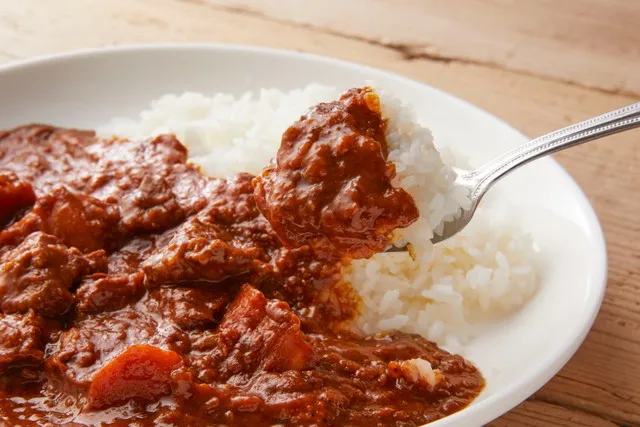

Menu
Coffee
One of our Specialties is coffee. Our coffee grounds come from different parts of the world, each at their own price, quality and flavors.
1. Guatemalan SHB - The beans were grown in altitudes of 4,500 feet above see-level, thus giving it the SHB grade. These conditions allowed the coffee to gain a citrus-like acidity and a fruity, chocolate flavor.
12oz - P 80.00
2. Columbia Narino - Narino coffee has a creamy, viscous body that coats the mouth with fruity and nutty flavors. The beans are grown in rainy climates and high altitudes as well, this gives the coffee a strong and solid foundation.
12oz - P 55.00
3. Cuban Crystal Mountain - One of the more expensive options, the beans that are used for the Cuban Crystal Mountain coffee is often the largest beans in the batch during harvest. It provides a sweet, nutty flavor, full-body aroma and taste. It also has low acidity.
12oz - P 230.00
4. Mocha Matari - The "Mocha" in its name shows that it was exported from a port town in the Republic of Yemen by the same name. Mocha Matari has a complex spicy and chocolate flavor profile with a heavy, “winey” body to compliment it.
12oz - P 80.00
*Many more coffee blends and options are in the Cafe
Curry
1. Leblanc Curry - Our Curry was inspired by the same one in-game. It is simply delicious, bursting with flavors. Some secret ingredients and spices here and there. As much as I'd like to share what they are, they must remain confidential.
- P 180.00
*Many more curry options are in the Cafe